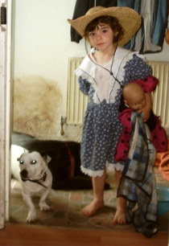

|  |
DonationsThanks for Upgrading - Please Support QuickFolders.
If QuickFolders also enhances your productivity and you would like to support its development, please give your programmer a donation!
Any amount is welcome - all donations go through paypal. How much?5 Euros (US$ 7.50) would be nice and 10 Euros or more considered generous! Your tip is important to make QuickFolders even more excellent! You can also add some feature requests here: Bugs + Features. |
What does free software mean?
The reason I am putting a lot of work into QuickFolders is because when I found it first and suggested some enhancements to its owner Alexander Malfait, he invited me to join his project and add the features myself. A lot of time since then has passed, a ton of code written, numerous bugs slayed and most noticable to you the loyal users of QuickFolders, a complete beauty makeover with lots of usability features. During this time I learnt a good deal more about how open source and free software works, behind the scenes, I also joined a voluntary group of Extension reviewers, who make sure that the quality standard of extensions remains high.
I think the most important aspect on free software is that it is a political statement to avoid the pitfalls of proprietary, monopoly driven software that coined terms such as "Embrace, Extend and Extinguish" and the innovation crippling model of patenting software (for further reading, please see links below). At the moment there is a conflict (I almost wrote war) between the old proprietary model of software and the Free Software Concept, and its you, the users who will really decide where the future will take us. By downloading the Mozilla products and extensions by independant software developers, like QuickFolders, you are actively helping the cause.
Quote: “Free software” is a matter of liberty, not price. To understand the concept, you should think of “free” as in “free speech,” not as in “free beer.”
Free software is a matter of the users' freedom to run, copy, distribute, study, change and improve the software.
It is also important to note that you can always modify QuickFolders as its open source and send me improvement suggestions. Or you can use features in the existing software and use them in your own extension, provided you stick to the license (you can not create commercial versions of the extension and you need to attribute / credit the original authors). I have tried to make the code as readable as possible, so that you can check how QuickFolders achieves its various goals.
I think that the donation model as such works, although I wish more people of the daily users (there is about 20,000 of you) would take the time to donate some money. At the moment there are about 10 to 15 donations for each released version. So, if you've found QF to improve your work or business productivity, please consider donating. We can _really_ use the support. Thanks again in advance.
One thing that I think is a bad idea is to try to use advertisement or constant "nagging" at the users in order to earn some money. I am actively refusing extensions that try to do things like add advertisements within the content area, change browser links (by adding referrers) or redirect users in order to achieve this, there is a very fruitful discussion on the AMO Editors team who constantly review issues that the users bring to our attention around this topic.
However, I also acknowledge that it is an inconvenience and a bit of a leap of faith to make a donation, so I would like to offset this inconvenience in the future by maybe adding some "bonus" functionality available to the donators. This does not mean "crippling" the existing features or punishing users who can ot afford or do not want to support donations - as long as I own this project there will always be a usable free version on Addons-Mozilla, and support for those who use it.
thanks for reading
yours sincerely, Axel Grude